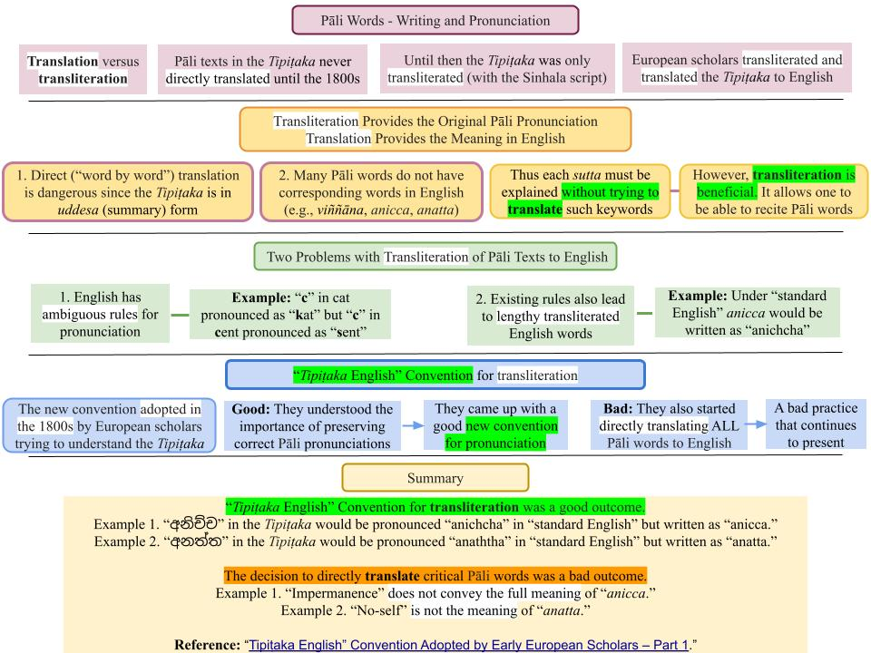
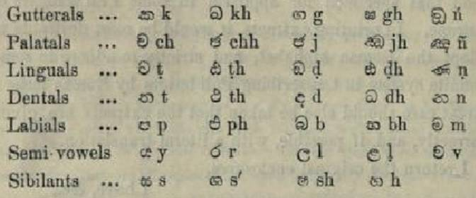

Pāli words written in Latin (Roman) script use a unique convention adopted by the British Government in 1866. I call it “Tipiṭaka English writing convention" (assigning a specific letter to represent a sound) to differentiate it from writing in "Standard English," where the same letter can be pronounced in several different ways. Many today are unaware of this “Tipiṭaka English writing convention."
May 27, 2023; Rewritten March 29, 2025

Download/Print: "C. Pāli Words - Writing and Pronunciation"
Pronunciation of English Words
1. The same letter in the English alphabet (Latin/Roman script) could be pronounced differently in different words. For example, "cat" is pronounced as "kat" while "cent" is pronounced as "sent." There are many other examples; some are given below.
- Therefore, it was necessary to adopt a convention to assign a given sound with a specific letter when writing a Pāli word using the English alphabet.
- It is possible to adopt a convention to combine a few letters to make it sound. This explanation is a bit complicated since Pāli does not have a script and is written with the Sinhala script, but it will become apparent below. For example, the word අනිච්ච if written in such a "natural-sounding way" would be "anichcha." However, then words can become very long, as we discuss below.
- In the 1800s, the Pāli Text Society adopted a specific writing convention to avoid those issues. In that convention, the word අනිච්ච is written as "anicca." Those not familiar with the convention could pronounce the word "anicca" incorrectly as "anikka" (as when pronouncing "cat" as "kat").
“Tipiṭaka English” Writing Convention
2. The convention adopted in the late 1800s was to represent the "ch" sound with "c." Thus, "anicca" should be pronounced as “anichcha.”
- These days, many people are unaware of that writing convention adopted by early European scholars to write Pāli words with the Latin/Roman script (English alphabet).
- I often see this writing problem when some Sinhalese (adding English subtitles in YouTube Wahraka Desanās, for example) write “anicca” as “anichcha.” That is because that is how it sounds (අනිච්ච)!
- Since the convention was adopted over 150 years ago, many are unaware of it today.
- By the way, the transliterated Pāli texts at Sutta Central are correct; they are taken from the early work of the Pāli Text Society.
- Also, see "Preservation of the Dhamma," "Background on the Current Revival of Buddha Dhamma," and "Misinterpretation of Anicca and Anatta by Early European Scholars" to better understand the historical background.
3. Another good example word is ”Satipaṭṭhāna.” Per the convention, the “t” must be pronounced as “th” (as in thief) and “ṭ” as “t” (as in trip); in “ṭh,” the “t” sound is even more emphasized. I suggest carefully going through the two posts referred to in #7.
- Similarly, the Pāli word “gati” was in the Tipiṭaka as “ගති.” If they wrote that in English letters with the correct pronunciation, it would be “gathi.” However, with the adopted “Tipiṭaka Convention,” it is written as “gati,” and now it rhymes like the “th” in “thief.” Even in the Sinhala language, one unaware of the “Tipiṭaka English Convention” may mispronounce gati in Sinhala as “ගටි.”
- I have used “gathi” in parenthesis with “gati” in some posts to show the correct pronunciation.
Translation and Transliteration
4. Transliteration means converting letters or words from one script or alphabet into another. Unlike translation, which communicates the meaning of a text from one language to another, transliteration is concerned with representing the phonetic sounds of the original language using the script of another language. Another related word is transcription, which is recording phonetic sounds using script in the same language. See "Translation vs. Transliteration vs. Transcription Differences & Examples."
- Let us consider the "Taṇhā Sutta (SN 27.8)" as an example. On the right is the transliteration version, and on the left is the English translation at Sutta Central. Since Pāli does not have its own script, we cannot make a transcription of it.
- In the transliteration version, the Pāli words are written in the Latin (Roman) script. The Latin script is used here to transliterate (not translate) the Pāli text. This enables people familiar with the Latin script (e.g., English speakers) to read and pronounce Pāli words.
- On the other hand, a translation provides the meaning in any given language (English in the above example.)
Transliteration of Pāli Tipiṭaka in Sinhala and Latin Scripts
5. The Pāli Tipiṭaka was transliterated with the Sinhala (Sinhalese) script in the 1st century BCE since Pāli does not have a script (alphabet.) Thus, it was the first transliteration of the Pāli Tipiṭaka. See "Preservation of the Dhamma." The Sinhala language is based on Pāli and shares many common words, including all the keywords in Paṭicca Samuppāda.
- In the late 1800s, the Pāli Text Society transliterated the Pāli Tipiṭaka with the Latin (Roman) script. That version is also available at Sutta Central and other websites. For example, the transliterated version of the "Taṇhā sutta (SN 27.8)" is at "Taṇhā sutta (SN 27.8)." See #3 below for details.
Transliteration of Pāli Suttās Do Not Follow Standard English Pronunciations
6. Some of you familiar with Pāli's pronunciation may have noticed that the pronunciation does not follow the standard pronunciation of English words.
- Let us consider the word "citta" in the verse."Yo, bhikkhave, rūpataṇhāya chandarāgo, cittasseso upakkileso" in the "Taṇhā Sutta (SN 27.8)."
- The letter “c” can make different sounds depending on the word it is in. The most common sound for “c” is the "hard k” sound, as in “cat.” However, when the letter “c” is followed by an “e,” “i,” or “y,” it usually makes the soft “s” sound as in “cent” or "city."
- Furthermore, the "t" is usually pronounced as in "Tom."
- However, the correct Pāli pronunciation of "citta" is in Table #13 below.
- The "c" in "citta" is pronounced with the "ch" sound instead of the "hard k” sound in “cat” OR the soft “s” sound in “cent” or "city."
- What is the reason for that? That particular writing/pronunciation was adopted in the 1800s by early European scholars who took a keen interest in the Tipiṭaka. There were two reasons for adopting that unique convention.
Two Reasons for Adopting a New Convention for Transliterating Pāli Texts
7. There are two specific issues in writing Pāli words with the Latin script. Note that this is not about translating into English. It is about transliterating Pāli texts with the Latin (Roman) script, as mentioned above. There are also issues with translation into English, which are addressed in #12 below.
- First, it is critical to pronounce Pāli words correctly; their original sounds embed the meaning of many keywords. Many words have their meanings explicit in the way they sound. See “Why is it Necessary to Learn Key Pāli Words?“ However, as explained, English (with Latin script) can generate different sounds with the same letter.
- Secondly, transliterated Pāli words can become long without adopting a specific convention for sounding Latin script, as explained in #9 below.
Problem: One Sound, Many Letters in English
8. English is notorious for having one letter represent multiple sounds. For example, the letter "c" can make a "k" sound (cat) or a "s" sound (cent). This inconsistency wouldn't work well for transliterating Pāli, where precise representation of sounds is crucial.
- In another example, “th” is pronounced differently in “them” than in “thief.” In #4 above, we saw how "c" can be pronounced in two ways in English words.
- Therefore, using “Standard English” to transliterate Pāli texts will lead to problems in getting the correct pronunciation sounds. A specific convention that PRESERVES Pāli pronunciation must be adopted.
- Now, let us look at the second issue.
Pāli Words Are Too Long When Written with the Latin Script
9. The word "citta" is written as "චිත්ත" in the Sinhala script. However, if it is written in a "natural way" to provide the correct sound, it should be "chiththa," which is pretty long. The word "cittasseso" in #4 above becomes "chiththasseso."
- Some longer Pāli words can become VERY LONG!
- That is the second reason for adopting a new convention for transliterating the Pāli text.
- The historical account is discussed in detail with references in “Tipiṭaka English” Convention Adopted by Early European Scholars – Part 1.”
- Let us go over the historical account briefly.
Adoption of “Tipiṭaka English Convention”
10. When the early Europeans started writing the Pāli Tipiṭaka using the English alphabet (a Latin alphabet), they ran into the above two problems. They realized the importance of preserving the original sounds (pronunciations.) They also wanted to keep the "word length" manageable. They adopted a new convention in the 1800s to address both issues. The Pāli Text Society -- established by pioneering scholars like Rhys Davids -- has done an excellent job of transliterating Pāli texts; see "Pāli Text Society." (However, the errors made in the English translations continue to be a huge problem: "Misinterpretation of Anicca and Anatta by Early European Scholars.")
- We will call the writing convention they adopted “Tipiṭaka English convention.”
- All current posts on the website are written per the “Tipiṭaka English writing convention." Almost all other English websites also use that convention.
- The above issues are discussed in detail in two posts: “Tipiṭaka English” Convention Adopted by Early European Scholars – Part 1” and “Tipiṭaka English” Convention Adopted by Early European Scholars – Part 2."
11. The first version of the “Tipiṭaka English writing convention" for writing Pāli words in English is summarized in the Table below (that specific name was not used at the time; I came up with the name “Tipiṭaka English writing convention”). It is from the book “A Descriptive Catalogue of Sanskrit, Pāli, and Sinhalese Literary Works of Ceylon, Volume I” by James D’Alwis (1870), p. 234.

Download: Pāli Words - Sinhala to English Script - Consonants
- One change to the above Table took place later. The decision to use “c” to represent the “ච” sound was made later. See “Tipiṭaka English” Convention Adopted by Early European Scholars – Part 1”
- It could be a good idea to consult “Pāli Glossary – (A-K)” and “Pāli Glossary – (L-Z)” to listen to the correct pronunciations while perusing the above two posts or whenever necessary.
Translation of Pāli Tipiṭaka to Other Languages
12. Many translations at Sutta Central and other websites like "Access to Insight" are incorrect (they follow the original incorrect translations by scholars like Rhys Davids); see "Misinterpretation of Anicca and Anatta by Early European Scholars." Pāli Tipiṭaka was not meant to be translated word-by-word for two reasons:
(i) It is mainly in summary (uddesa) form; see "Sutta Interpretation – Uddēsa, Niddēsa, Paṭiniddēsa."
(ii) Some key Pāli words (like anicca and anatta) do not have a corresponding word in other languages; see "Word-for-Word Translation of the Tipiṭaka."
- The Tipiṭaka was not directly translated into even the Sinhala language until about 20 years ago (following the mistake made by the Pāli Text Society in translating it into English in the 1800s.)
- Instead, in the early days, parts of the Tipiṭaka (e.g., individual suttās) were discussed in long-form translations with examples and analogies. For example, I translate a given sutta in detail. See "Sutta Interpretations."
Writing/Pronunciation of Common Pāli Words
13. The following short table provides the correct writing/pronunciation of some common Pāli words in "Tipiṭaka English Convention” versus “Standard English”—more pronunciations are in “Pāli Glossary – (A-K)” and “Pāli Glossary – (L-Z).”
[table id=29 /]
- This post is in the “Buddhism – In Charts” section. However, I will also include it in the new "Buddha Dhamma – Advanced" section since it is essential to understand this issue.
- If anyone has questions/comments on this post, please comment on the thread, "Post on 'Pāli Words - Writing and Pronunciation.'"